`
 


×

叔叔：不知不觉已经两年了哦！是不是像做了一个梦一样， 两年一直是我等你，你等我。 最后还是变成了我等你。曾经超喜欢兵哥哥的我， 如今也要退伍了，两年我们都变过，都没有说 为对方坚持到底过，我一直在别人身上寻找你的影子， 可是你我是你无法复制，没觉得与你分开的 那些日子，我总是在不间断的联系你吗？ 知道我为什么一直没有换上海的号码吗？ 说什么念旧，其实念的都是你， 因为我怕有一天你想联系我都没有办法了， 有你在我身边我会觉得特别安心，特别有安全感， 在南京的时候，多想能联系到你，在漳州的时候， 又是多想你还和以前一样，过年的那天晚上看见你删了我的微信， 我哭了好久好久。 在漳州的时候，是会不间断的联系你，可我说得你和以前不大一样， 我想或许你有你的生活，我不说为我。 再然后你加了我微信，从那一刻开始我就知道你又回来了， 你或许总是会觉得我不太在你，不是很挂念你， 不像你那样天天说想你，因为我总觉得大爱无言。 因为我总觉得我比你小，你应该多爱我，即使我对你有多喜欢,多想你， 也不想说出来，但是我真的有每天都像你，每天都会和朋友谈起你 我也曾幻想过以后和你在一起的日子，想过无数次。